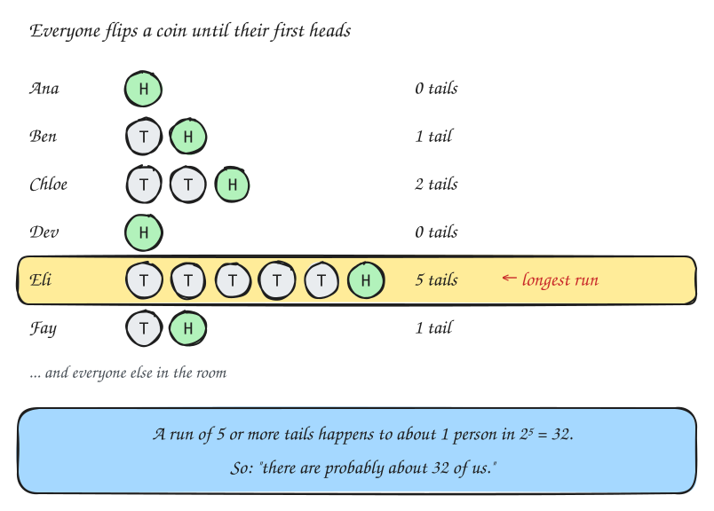
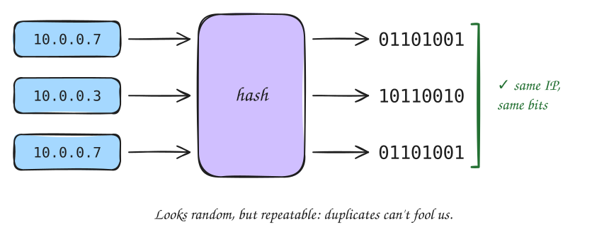
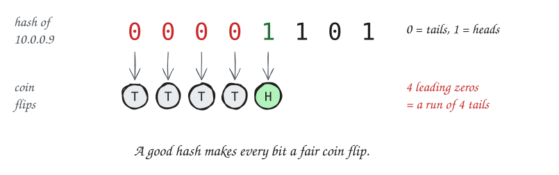
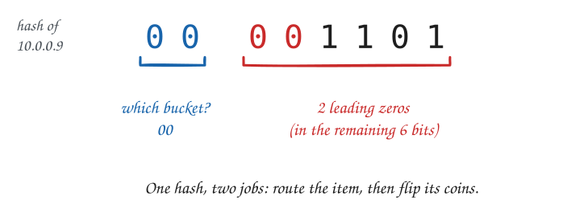
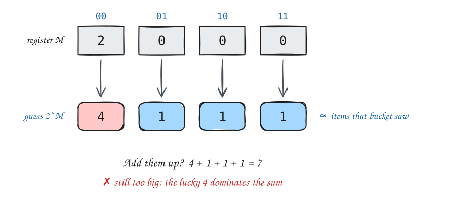
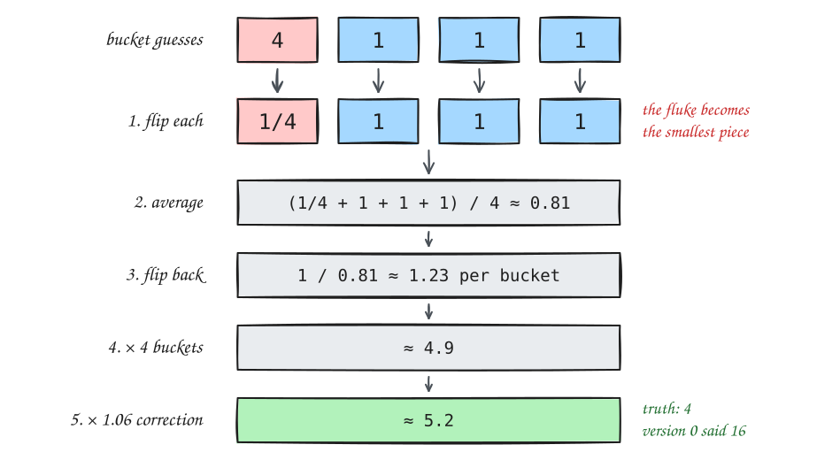
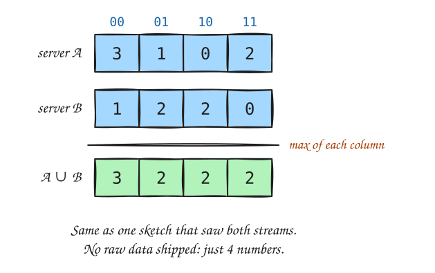
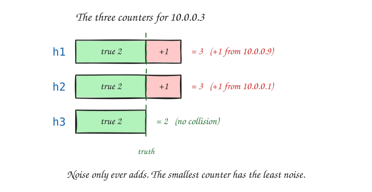

HyperLogLog and the Count-Min Sketch

A silly way to count people. But the same trick will count distinct visitors to a website.
Both are easy for a spreadsheet of 100 rows.
They are not easy for billions of events a day that never stop arriving.
We get to see each item once, as it flies past, and we may keep only a tiny notebook.
In exchange, we accept answers that are approximately right.
| Exact table | Sketch | |
|---|---|---|
| Memory for 1 billion distinct IPs | tens of GB | 12 KB |
| Answer | exact | within ~1% |

Think of it as a coin flip you can’t redo. In the room, if I counted you twice, you’d flip again and get a second chance to be lucky. A visitor seen twice gets the same bits.
How many different items?

Remember the room? Now every distinct item is a person flipping coins, and its leading zeros are its run of tails.
This is why counting the room was silly: one lucky person decided the answer.
Fix: run many small experiments and combine them, like asking each row of the room to run its own.

Each bucket keeps its own longest run, in a small number called a register. Each bucket is one row of the room.

Each register is “version 0” for its own bucket, so a longest run of M means about \(2^M\) items landed there.
You drive to town at 60 mph and come back at 20 mph.
What was your average speed?
Not 40. The slow leg takes three times as long, so it counts three times as much: the answer is 30 mph.
The trick: flip each speed into “hours per mile”, average those, then flip back. This is the harmonic mean. Small values win; one big value can’t take over.

1.06 is a fixed correction worked out mathematically: on average, steps 1–4 come out slightly too small with 4 registers. (With thousands of registers it’s 1.44.)
Error ≈ 1.04 / √m, where m = number of registers (6 bits each).
| Registers m | Memory | Typical error |
|---|---|---|
| 16 | 12 bytes | 26% |
| 256 | 192 bytes | 6.5% |
| 1,024 | 768 bytes | 3.3% |
| 16,384 | 12 KB | 0.8% |
And memory doesn’t grow with the stream: 12 KB for a thousand items or a trillion.

PFADD / PFCOUNT, 12 KB per counterAPPROX_COUNT_DISTINCT; Postgres via the hll extensionHow often does each item appear?
“How many times did 10.0.0.3 visit?” “How often did #worldcup appear?”
HyperLogLog can’t answer this. It never remembers which item caused what.
We need counters, but far fewer than one per item.

For the answer to be wrong, the item must collide in every row at once. With independent hashes, that’s unlikely.
With w columns and d rows, every answer is
where w = e / ε and d = ln(1 / δ).
Example: 5 rows × 2,719 columns ≈ 54 KB.
Every count is within 0.1% of total traffic, 99% of the time, however many distinct items there are.
It also merges: add two grids cell by cell.
| HyperLogLog | Count-Min Sketch | |
|---|---|---|
| Question | How many different? | How often? |
| Notebook | m small registers | d × w counters |
| Update | keep the max | add 1 in each row |
| Answer | combine registers | min over rows |
| Error | ± ~1%, either way | only overcounts |
| Merge | max per register | add per cell |
Hashing for randomness, plus forgetting almost everything = answers at any scale.
More sketches to look up:
Questions?